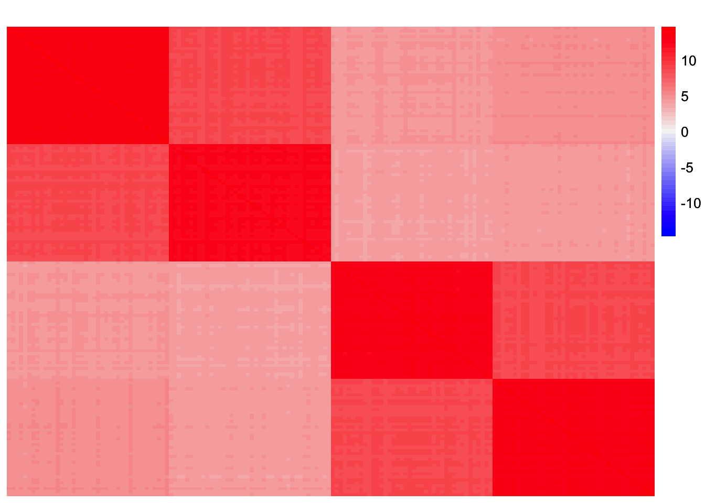
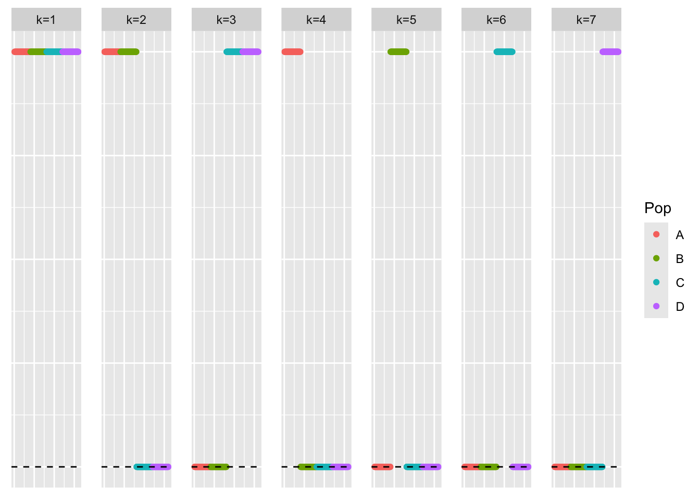
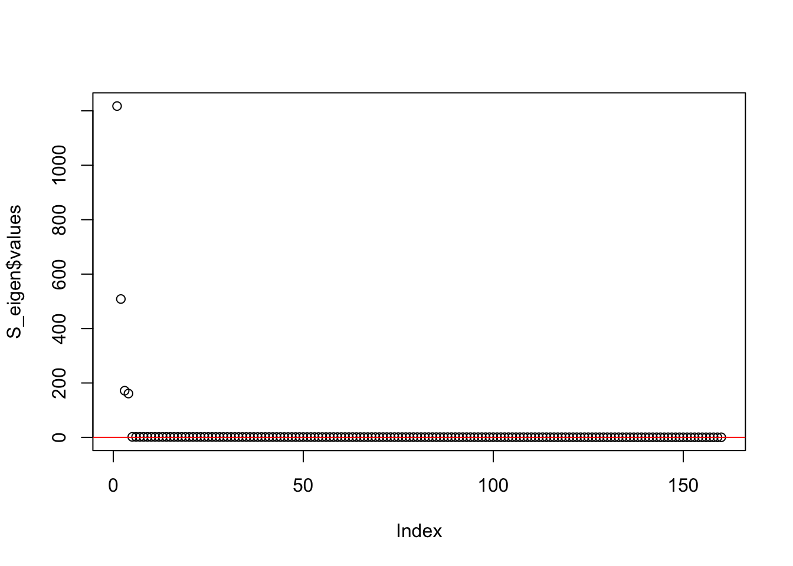
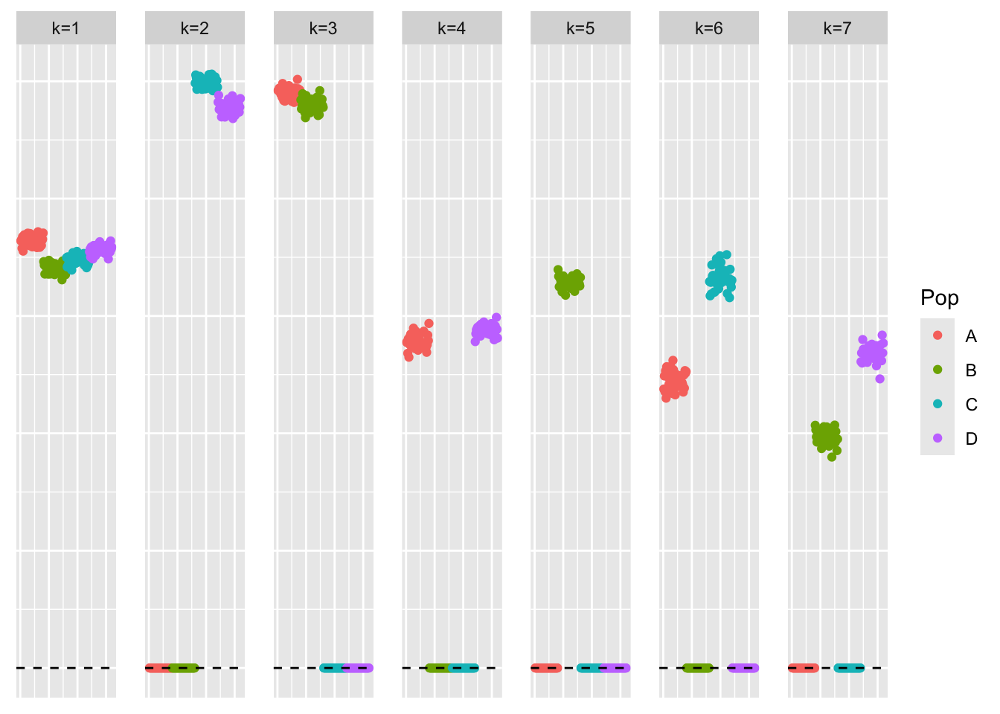
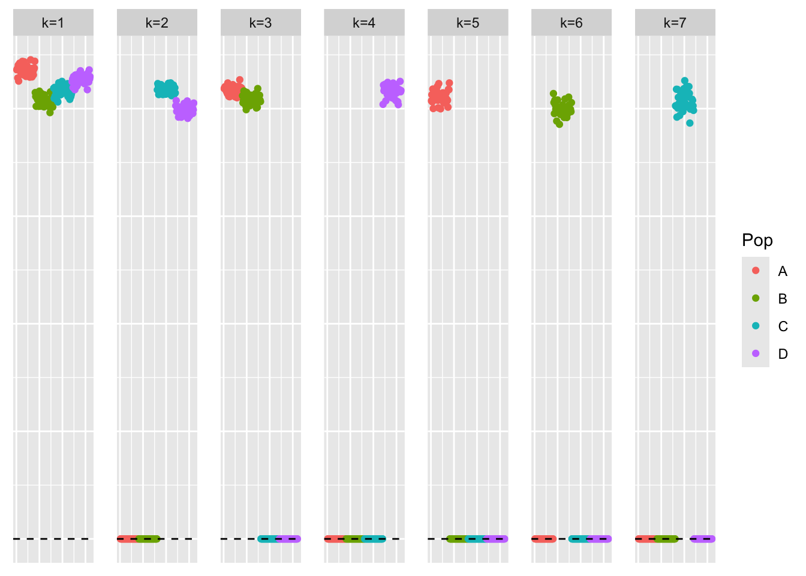
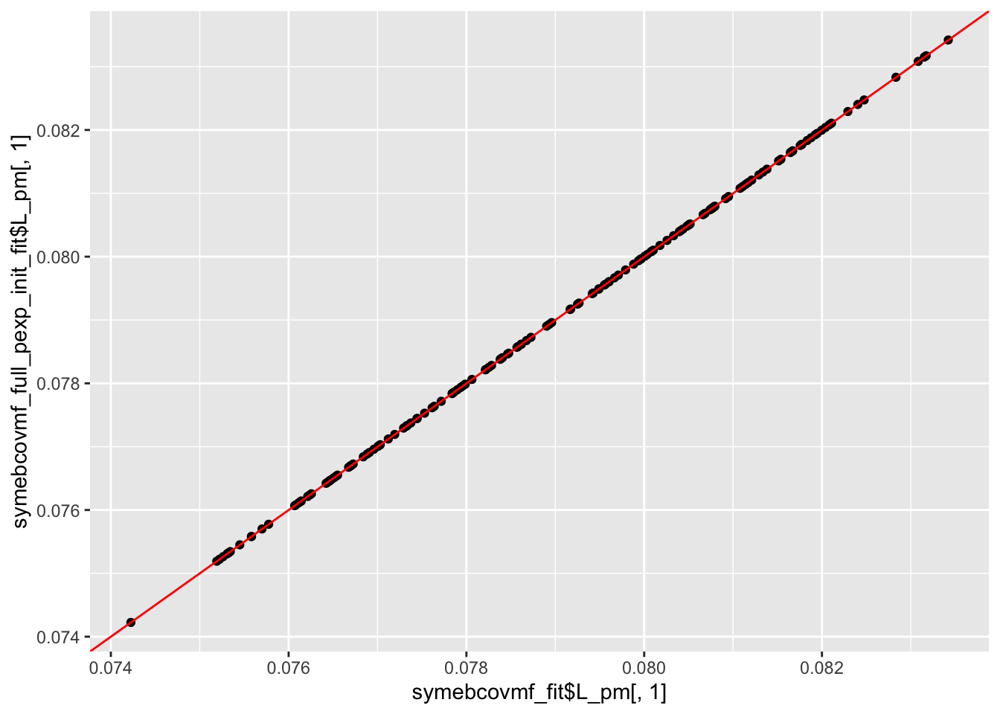
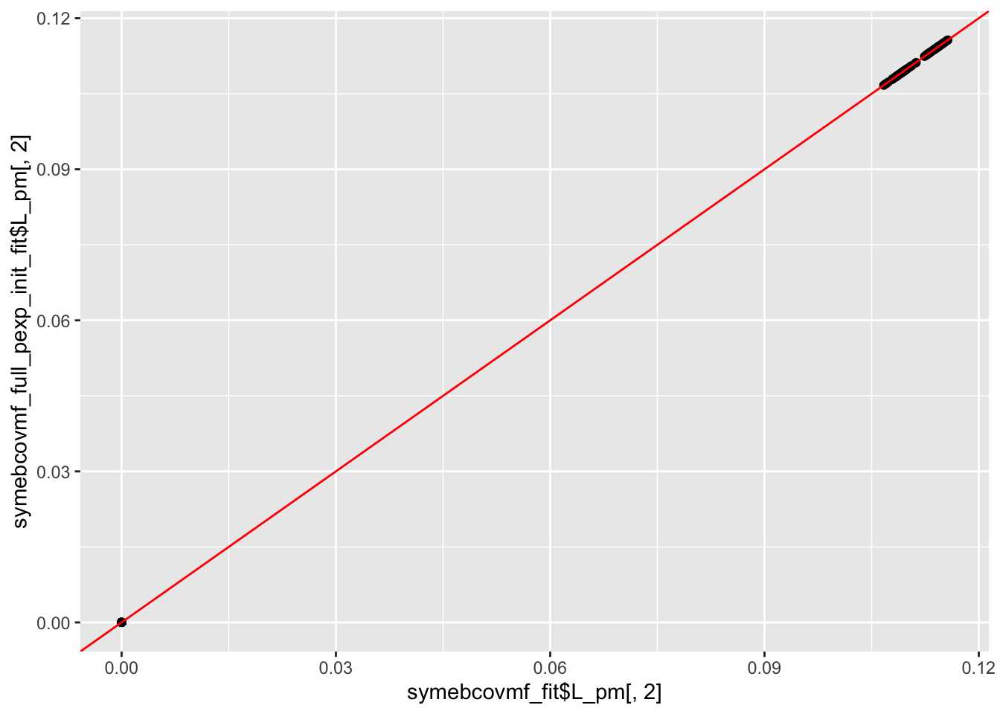

Last updated: 2025-04-28
Checks: 7 0
Knit directory:
symmetric_covariance_decomposition/
This reproducible R Markdown analysis was created with workflowr (version 1.7.1). The Checks tab describes the reproducibility checks that were applied when the results were created. The Past versions tab lists the development history.
Great! Since the R Markdown file has been committed to the Git repository, you know the exact version of the code that produced these results.
Great job! The global environment was empty. Objects defined in the global environment can affect the analysis in your R Markdown file in unknown ways. For reproduciblity it’s best to always run the code in an empty environment.
The command set.seed(20250408) was run prior to running
the code in the R Markdown file. Setting a seed ensures that any results
that rely on randomness, e.g. subsampling or permutations, are
reproducible.
Great job! Recording the operating system, R version, and package versions is critical for reproducibility.
Nice! There were no cached chunks for this analysis, so you can be confident that you successfully produced the results during this run.
Great job! Using relative paths to the files within your workflowr project makes it easier to run your code on other machines.
Great! You are using Git for version control. Tracking code development and connecting the code version to the results is critical for reproducibility.
The results in this page were generated with repository version daf1ee3. See the Past versions tab to see a history of the changes made to the R Markdown and HTML files.
Note that you need to be careful to ensure that all relevant files for
the analysis have been committed to Git prior to generating the results
(you can use wflow_publish or
wflow_git_commit). workflowr only checks the R Markdown
file, but you know if there are other scripts or data files that it
depends on. Below is the status of the Git repository when the results
were generated:
Ignored files:
Ignored: .DS_Store
Ignored: .Rhistory
Note that any generated files, e.g. HTML, png, CSS, etc., are not included in this status report because it is ok for generated content to have uncommitted changes.
These are the previous versions of the repository in which changes were
made to the R Markdown
(analysis/symebcovmf_point_exp_init.Rmd) and HTML
(docs/symebcovmf_point_exp_init.html) files. If you’ve
configured a remote Git repository (see ?wflow_git_remote),
click on the hyperlinks in the table below to view the files as they
were in that past version.
| File | Version | Author | Date | Message |
|---|---|---|---|---|
| Rmd | daf1ee3 | Annie Xie | 2025-04-28 | Update point exponential initialization analysis |
| html | b407abe | Annie Xie | 2025-04-21 | Build site. |
| Rmd | f334e30 | Annie Xie | 2025-04-21 | Add exploration of point-exp initialization |
In this analysis, I want to test out initializing symEBcovMF with the generalized binary prior with symEBcovMF fit with a point-exponential prior.
library(ebnm)
library(pheatmap)
library(ggplot2)source('code/visualization_functions.R')
source('code/symebcovmf_functions.R')To test this procedure, I will apply it to the tree-structured dataset. When testing out symEBcovMF, I found that the estimates from the two priors in the tree setting had the largest difference.
sim_4pops <- function(args) {
set.seed(args$seed)
n <- sum(args$pop_sizes)
p <- args$n_genes
FF <- matrix(rnorm(7 * p, sd = rep(args$branch_sds, each = p)), ncol = 7)
# if (args$constrain_F) {
# FF_svd <- svd(FF)
# FF <- FF_svd$u
# FF <- t(t(FF) * branch_sds * sqrt(p))
# }
LL <- matrix(0, nrow = n, ncol = 7)
LL[, 1] <- 1
LL[, 2] <- rep(c(1, 1, 0, 0), times = args$pop_sizes)
LL[, 3] <- rep(c(0, 0, 1, 1), times = args$pop_sizes)
LL[, 4] <- rep(c(1, 0, 0, 0), times = args$pop_sizes)
LL[, 5] <- rep(c(0, 1, 0, 0), times = args$pop_sizes)
LL[, 6] <- rep(c(0, 0, 1, 0), times = args$pop_sizes)
LL[, 7] <- rep(c(0, 0, 0, 1), times = args$pop_sizes)
E <- matrix(rnorm(n * p, sd = args$indiv_sd), nrow = n)
Y <- LL %*% t(FF) + E
YYt <- (1/p)*tcrossprod(Y)
return(list(Y = Y, YYt = YYt, LL = LL, FF = FF, K = ncol(LL)))
}sim_args = list(pop_sizes = rep(40, 4), n_genes = 1000, branch_sds = rep(2,7), indiv_sd = 1, seed = 1)
sim_data <- sim_4pops(sim_args)This is a heatmap of the scaled Gram matrix:
plot_heatmap(sim_data$YYt, colors_range = c('blue','gray96','red'), brks = seq(-max(abs(sim_data$YYt)), max(abs(sim_data$YYt)), length.out = 50))
| Version | Author | Date |
|---|---|---|
| b407abe | Annie Xie | 2025-04-21 |
This is a scatter plot of the true loadings matrix:
pop_vec <- c(rep('A', 40), rep('B', 40), rep('C', 40), rep('D', 40))
plot_loadings(sim_data$LL, pop_vec)
| Version | Author | Date |
|---|---|---|
| b407abe | Annie Xie | 2025-04-21 |
This is a plot of the eigenvalues of the Gram matrix:
S_eigen <- eigen(sim_data$YYt)
plot(S_eigen$values) + abline(a = 0, b = 0, col = 'red')
| Version | Author | Date |
|---|---|---|
| b407abe | Annie Xie | 2025-04-21 |
integer(0)This is the minimum eigenvalue:
min(S_eigen$values)[1] 0.3724341symebcovmf_fit <- sym_ebcovmf_fit(S = sim_data$YYt, ebnm_fn = ebnm::ebnm_generalized_binary, K = 7, maxiter = 500, rank_one_tol = 10^(-8), tol = 10^(-8), refit_lam = TRUE)[1] "elbo decreased by 0.204520186045556"
[1] "elbo decreased by 0.00983061176884803"This is a scatter plot of \(\hat{L}\), the estimate from symEBcovMF:
bal_pops <- c(rep('A', 40), rep('B', 40), rep('C', 40), rep('D', 40))
plot_loadings(symebcovmf_fit$L_pm %*% diag(sqrt(symebcovmf_fit$lambda)), bal_pops)
| Version | Author | Date |
|---|---|---|
| b407abe | Annie Xie | 2025-04-21 |
symebcovmf_fit$elbo[1] -14982.02For this procedure, I start by running symEBcovMF with a point-exponential prior with Kmax set to the inputted Kmax value. From this, I get an estimate for \(L\), which I call \(\hat{L}_{exp}\). Then, I run symEBcovMF with a generalized-binary prior. I initialize the rank-one fit for factor \(k\) with the \(k\)-th column of \(\hat{L}_{exp}\).
sym_ebcovmf_point_exp_init_full_fit <- function(S, ebnm_fn, Kmax, maxiter, rank_one_tol, tol, refit_lam = FALSE){
#initialize object
sym_ebcovmf_obj <- sym_ebcovmf_init(S)
symebcovmf_pexp_gb_fit <- sym_ebcovmf_fit(S, ebnm_fn = ebnm::ebnm_point_exponential, K = Kmax, maxiter = maxiter, rank_one_tol = rank_one_tol, tol = tol, refit_lam = refit_lam)
curr_rank <- 0
obj_diff <- Inf
while ((curr_rank < Kmax) & (obj_diff > tol)){
# add factor
v_init <- symebcovmf_pexp_gb_fit$L_pm[,(curr_rank+1)]
sym_ebcovmf_obj <- sym_ebcovmf_r1_fit(S, sym_ebcovmf_obj, ebnm_fn, maxiter, rank_one_tol, v_init = v_init)
# check if new factor was added
if (length(sym_ebcovmf_obj$vec_elbo_K) == curr_rank){
print(paste('Adding factor', (curr_rank + 1), 'does not improve the objective function'))
break
} else {
if (curr_rank > 0){
if (refit_lam == TRUE){
sym_ebcovmf_obj <- refit_lambda(S, sym_ebcovmf_obj)
}
obj_diff <- sym_ebcovmf_obj$vec_elbo_K[curr_rank + 1] - sym_ebcovmf_obj$vec_elbo_K[curr_rank]
}
}
curr_rank <- curr_rank + 1
}
return(sym_ebcovmf_obj)
}symebcovmf_full_pexp_init_fit <- sym_ebcovmf_point_exp_init_full_fit(S = sim_data$YYt, ebnm_fn = ebnm::ebnm_generalized_binary, K = 7, maxiter = 500, rank_one_tol = 10^(-8), tol = 10^(-8), refit_lam = TRUE)[1] "elbo decreased by 0.175264986013644"
[1] "elbo decreased by 0.0427249788735935"
[1] "elbo decreased by 0.0834470106638037"
[1] "elbo decreased by 0.000637921650195494"This is a scatter plot of \(\hat{L}_{exp-init}\), the estimate from symEBcovMF initialized with a point-exponential fit:
bal_pops <- c(rep('A', 40), rep('B', 40), rep('C', 40), rep('D', 40))
plot_loadings(symebcovmf_full_pexp_init_fit$L_pm %*% diag(sqrt(symebcovmf_full_pexp_init_fit$lambda)), bal_pops)
| Version | Author | Date |
|---|---|---|
| b407abe | Annie Xie | 2025-04-21 |
This is the ELBO:
symebcovmf_full_pexp_init_fit$elbo[1] -7559.355ggplot(data = NULL, aes(x = symebcovmf_fit$L_pm[,1], y = symebcovmf_full_pexp_init_fit$L_pm[,1])) + geom_point() + geom_abline(slope = 1, intercept = 0, color = 'red')
ggplot(data = NULL, aes(x = symebcovmf_fit$L_pm[,2], y = symebcovmf_full_pexp_init_fit$L_pm[,2])) + geom_point() + geom_abline(slope = 1, intercept = 0, color = 'red')
ggplot(data = NULL, aes(x = symebcovmf_fit$L_pm[,3], y = symebcovmf_full_pexp_init_fit$L_pm[,3])) + geom_point() + geom_abline(slope = 1, intercept = 0, color = 'red')We see that the estimate from generalized binary symEBcovMF initialized with the point-exponential fit looks like a tree, unlike the estimate from generalized binary symEBcovMF initialized with SVD. Furthermore, we see that this estimate obtains a higher ELBO than that of the default method. This suggests that the default method may be getting stuck in a local optima. This is not too surprising. I also suspect that the generalized binary prior is very sensitive to initialization, and may struggle to jump to sparser solutions (even if the sparser solutions yield higher objective function values).
I did try a version of this method where I computed the point-exponential fit for each factor within the rank-one fitting procedure. This point-exponential fit used the current residual matrix computed from factors initialized with point-exponential fits and then refit with generalized binary. However, I found that this method did not yield a tree-like loadings estimate. The estimate looked closer to that of regular generalized binary symEBcovMF. In addition, it only yielded a slightly higher ELBO. I’ve noticed that there are differences in the residual matrices from generalized binary fits vs point-exponential fits. So my best guess for why this occurred is that the residual matrix from the point-exponential fit makes it a little easier to find the group effects one group at a time. Meanwhile, the residual matrix from the generalized binary fit makes it harder to distinguish groups 1 and 4. I explore this more in another analysis. (Perhaps regular power method would also have this issue).
sessionInfo()R version 4.3.2 (2023-10-31)
Platform: aarch64-apple-darwin20 (64-bit)
Running under: macOS Sonoma 14.4.1
Matrix products: default
BLAS: /Library/Frameworks/R.framework/Versions/4.3-arm64/Resources/lib/libRblas.0.dylib
LAPACK: /Library/Frameworks/R.framework/Versions/4.3-arm64/Resources/lib/libRlapack.dylib; LAPACK version 3.11.0
locale:
[1] en_US.UTF-8/en_US.UTF-8/en_US.UTF-8/C/en_US.UTF-8/en_US.UTF-8
time zone: America/Chicago
tzcode source: internal
attached base packages:
[1] stats graphics grDevices utils datasets methods base
other attached packages:
[1] ggplot2_3.5.1 pheatmap_1.0.12 ebnm_1.1-34 workflowr_1.7.1
loaded via a namespace (and not attached):
[1] gtable_0.3.5 xfun_0.48 bslib_0.8.0 processx_3.8.4
[5] lattice_0.22-6 callr_3.7.6 vctrs_0.6.5 tools_4.3.2
[9] ps_1.7.7 generics_0.1.3 tibble_3.2.1 fansi_1.0.6
[13] highr_0.11 pkgconfig_2.0.3 Matrix_1.6-5 SQUAREM_2021.1
[17] RColorBrewer_1.1-3 lifecycle_1.0.4 truncnorm_1.0-9 farver_2.1.2
[21] compiler_4.3.2 stringr_1.5.1 git2r_0.33.0 munsell_0.5.1
[25] getPass_0.2-4 httpuv_1.6.15 htmltools_0.5.8.1 sass_0.4.9
[29] yaml_2.3.10 later_1.3.2 pillar_1.9.0 jquerylib_0.1.4
[33] whisker_0.4.1 cachem_1.1.0 trust_0.1-8 RSpectra_0.16-2
[37] tidyselect_1.2.1 digest_0.6.37 stringi_1.8.4 dplyr_1.1.4
[41] ashr_2.2-66 labeling_0.4.3 splines_4.3.2 rprojroot_2.0.4
[45] fastmap_1.2.0 grid_4.3.2 colorspace_2.1-1 cli_3.6.3
[49] invgamma_1.1 magrittr_2.0.3 utf8_1.2.4 withr_3.0.1
[53] scales_1.3.0 promises_1.3.0 horseshoe_0.2.0 rmarkdown_2.28
[57] httr_1.4.7 deconvolveR_1.2-1 evaluate_1.0.0 knitr_1.48
[61] irlba_2.3.5.1 rlang_1.1.4 Rcpp_1.0.13 mixsqp_0.3-54
[65] glue_1.8.0 rstudioapi_0.16.0 jsonlite_1.8.9 R6_2.5.1
[69] fs_1.6.4